k-Day 153｜獨庫公路（八）Xosh
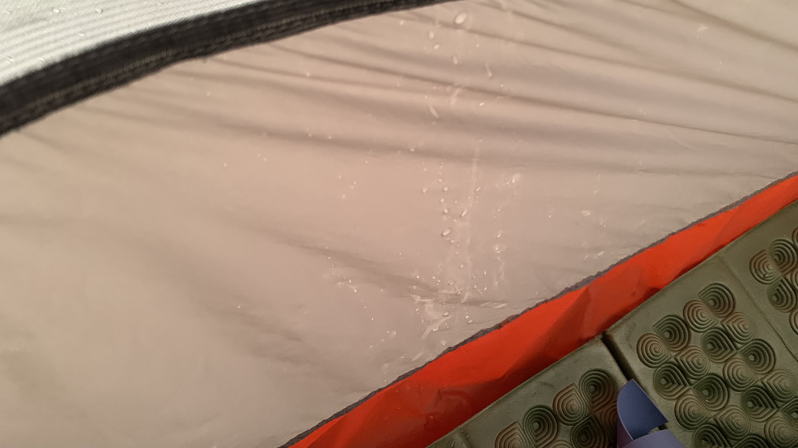
即便拉緊外帳，經過昨天的風雨，內側仍然滲入不少雨水。
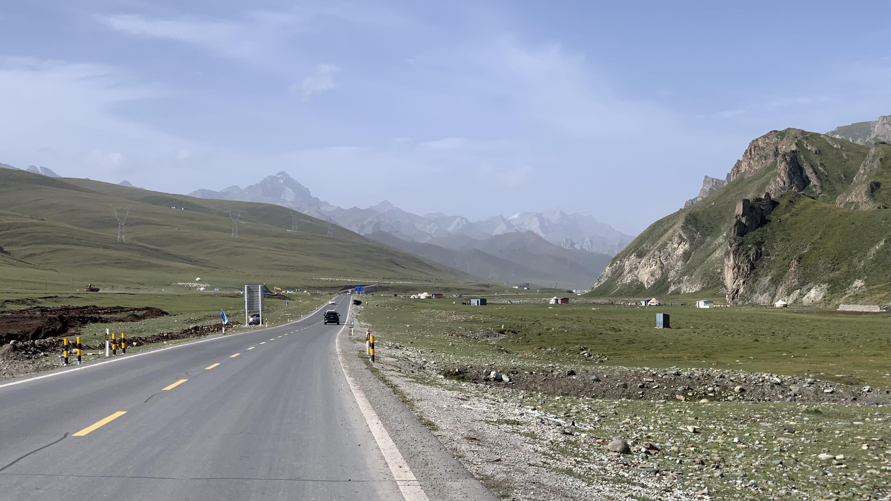
空氣吸起來很乾淨，多吸兩口，突然想起這裡的草沒有甜甜的高級草本喉糖味呢。
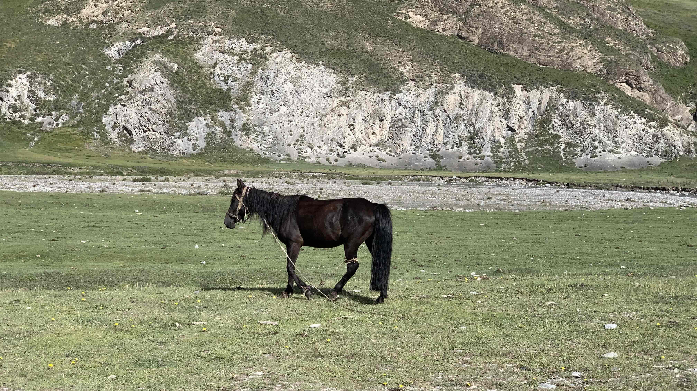
我不想顯得自己像個標榜崇高道德的衛道人士，但這匹馬的臀中肌有烙印痕跡，脖子上環繞著一條連接到地面的粗繩，左側的前蹄和後膝上方被鎖具鎖著。這名為馬的物種在我曾經的旅途中，代表著沙蓋裡的四中動物中最崇高的一種。身處天山山脈的高山草原，卻像個刑犯一樣活著。一直沒辦法從此地感受到的精神性，或者來自這些象徵意義被踐踏的靈魂衝擊。
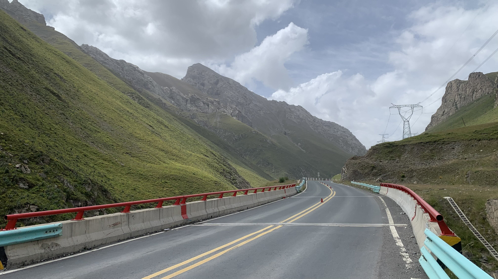
今天的山和草原其實很漂亮，車流也明顯減少。享受慢慢踩著上坡的感覺，偶爾會有幾輛車裡的小朋友探出頭對我說加油。
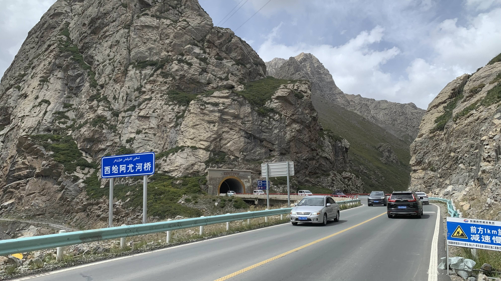
獨庫公路上的車輛來自全國各地，每次被惡意逼車、對向超車直直往我衝過來硬是被逼著靠邊的時候，我都會記下車牌上的省份。至今可以總結，低級的駕駛是自身素質問題，跟省份地域無關。
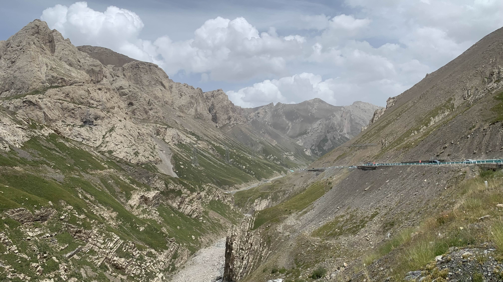
即將翻過最後一個山口之際，終於有點安靜下來的感覺。一條五百多公里的高山公路，熱鬧程度堪比中山站的夜晚。
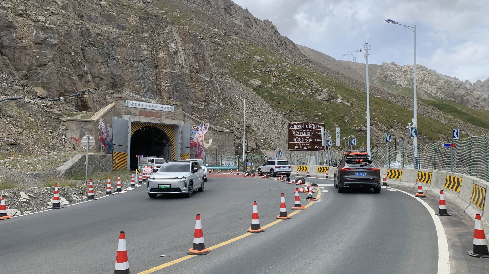
過了這隧道就是下坡，獨庫公路也快到終點。停下來打開車燈時對向過來的騎士大聲說：「加油！就快到頭了！」
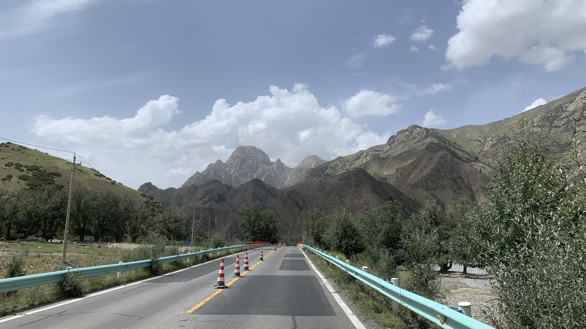
一過隧道，沿著山谷往下，體感溫度不斷飆升，連樹都長成西域風情的樣子。
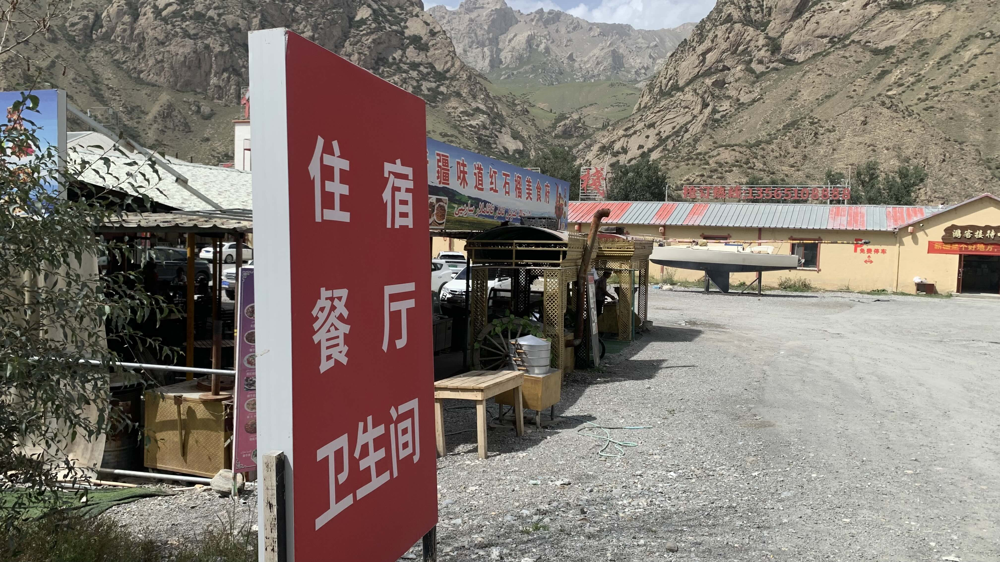
今天的小賣部人潮不多，但餐廳還是有的。
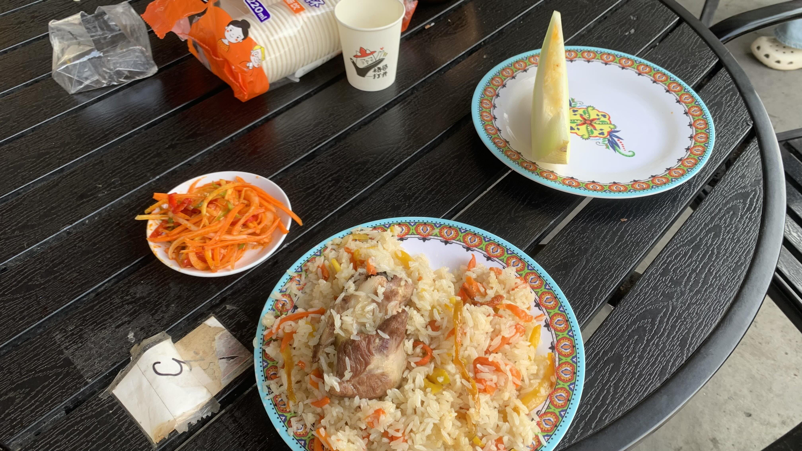
點了抓飯，小菜是附贈的，哈密瓜則是隔壁桌客人請的，吃了一片又送上一片。這裡的餐廳好像可以點水果，推車上堆了大量哈密瓜。
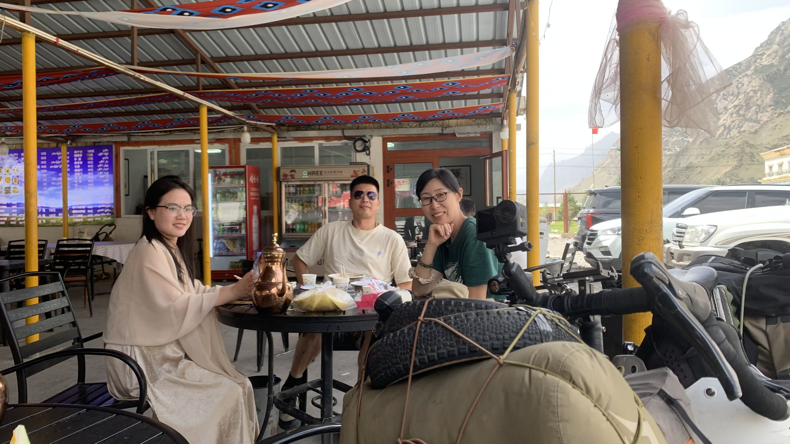
這桌客人是來旅遊的，剛好在這裡吃飯就問了我從哪裡騎過來。聽到我是台灣人，中間的大哥笑說：「我剛剛還以為是日本人，你以後就說你是台灣的。」
三位是河南人，問我聽過河南的哪些城市，我說：「很多啊！我們小時候都學過的......」
「......」三個人靜靜等著我開口。
「要不你們說幾個我說不定記得？」心中有點驚訝，沒想到黨國教育根植在我腦中的中國地理在多年後已經被其他知識清洗殆盡了。
「鄭州、洛陽、商丘...」
「我知道商丘，有什麼古蹟對吧？」
即便回答得像個外行人，他們離開時竟然把我的飯錢也一起付了。
商丘客人走後，旁邊又來了一桌維族人。時不時能感受到他們的目光，卻因為聽不懂聊天內容，無法確知究竟在聊些什麼。
直到起身收拾行李，把攤在燒烤爐上的太陽能板拿下來。他們才開口：「這是太陽能？」「對的。」「你從哪裡來？騎多久來這裡？」聽完我的回答後，大家齁了一聲。
塞好裝備，戴上手套頭巾，轉過身對著一直在觀察我的他們說：「Xosh！」
他們的表情驚訝了一秒，隨即笑著對我說：「 Xosh！」
這就是外國人在台灣說台語會收穫的表情嗎？真是太有趣了。
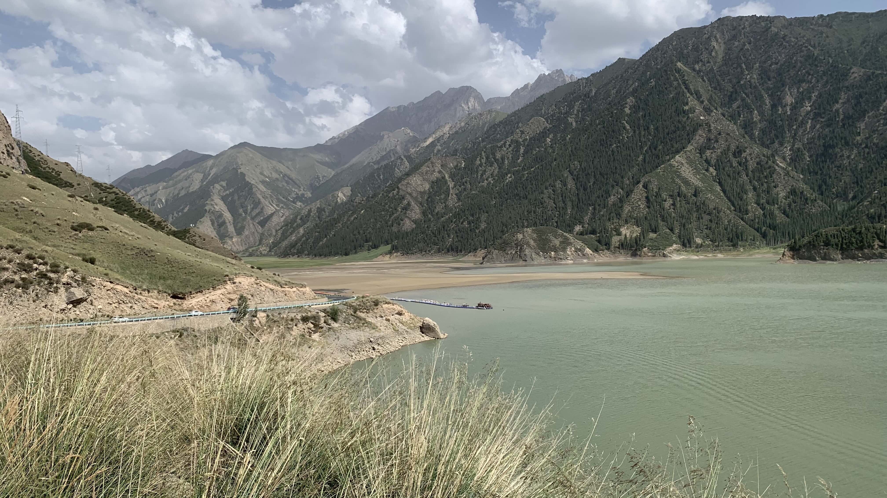
下山時經過大小龍池，相當漂亮，但是似乎只能遠遠看著。
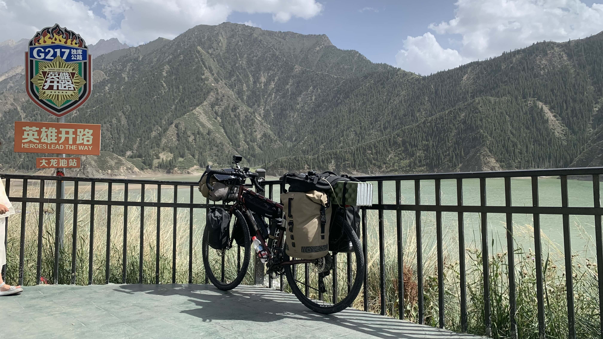
這裡是景區拍照打卡點。每個景點都會設立類似的牌子，讓遊客站在定點和背後的風景拍照打卡。現在想起剛進新疆時，請我吃飯送我饢的超市老闆夫婦就提過，很多人旅行都會這樣拍照打卡。
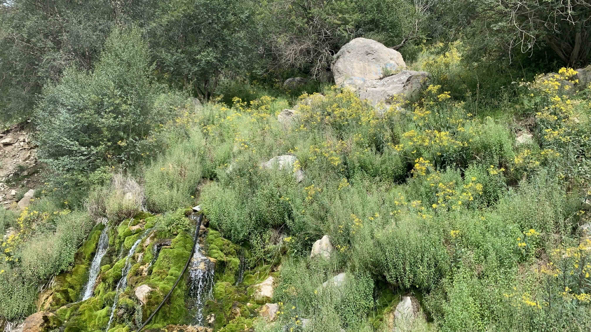
路旁出現小瀑布，看來水質還算清澈。早上拿單車水壺泡蛋白粉喝，瓶子至今還有怪味。乾脆拿到瀑布下洗一洗。
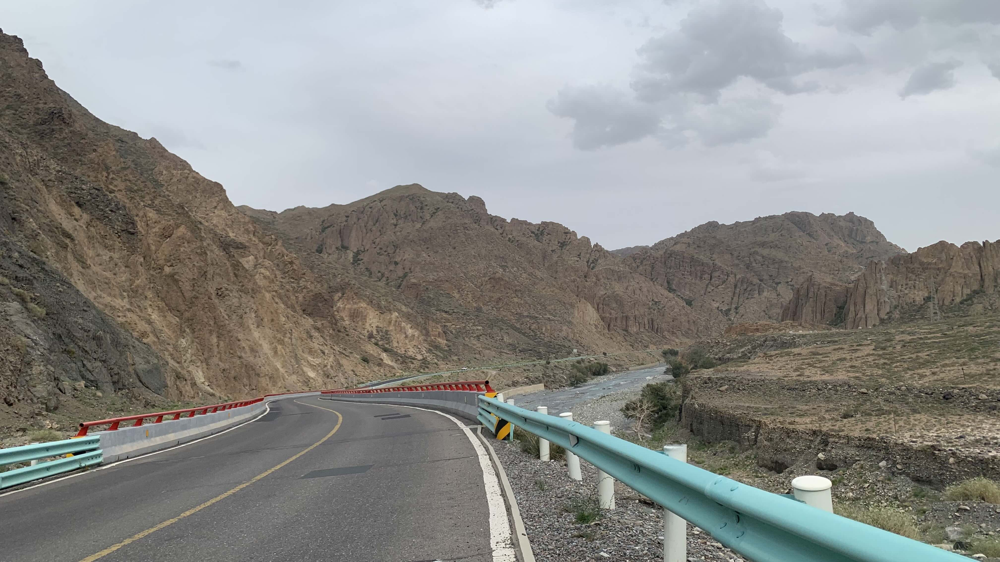
下午的路並非一路往下，反而起起伏伏，沒有想像的輕鬆，倒是周遭的山慢慢變成土黃色。
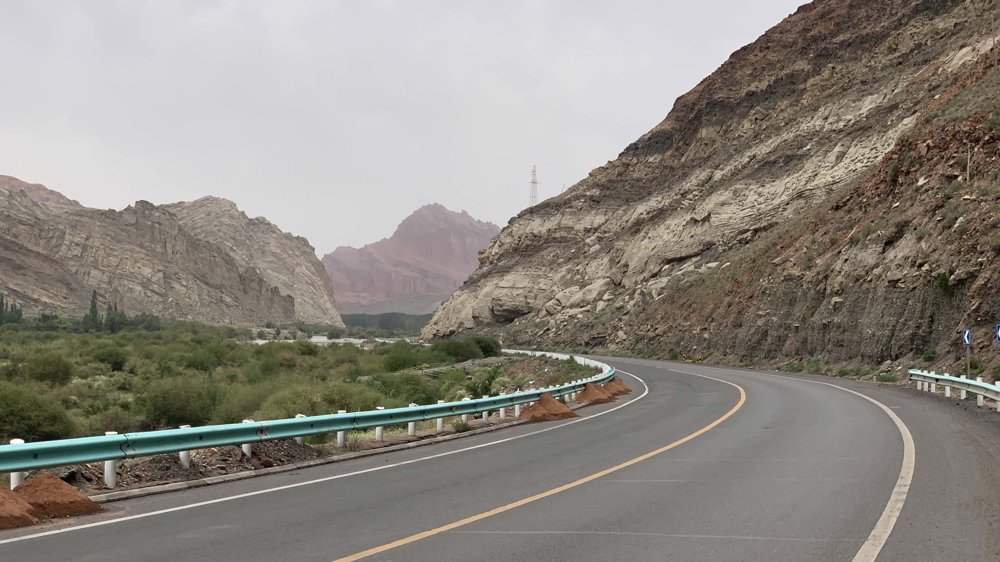
土黃色山壁的遠處出現一座巨大的紅色的山，像屏風一樣，相當帥氣。
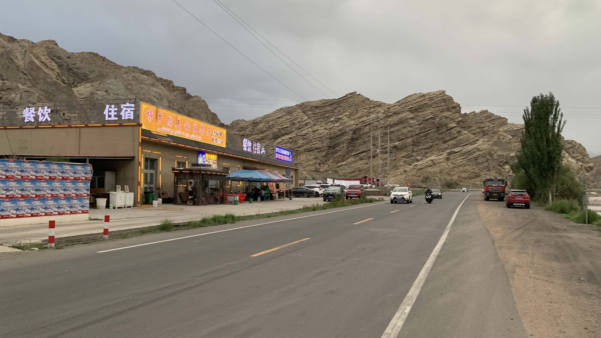
今天決定睡在紅色屏風山的前面。找到一間超市，買了10元飲料，外面聊天的卡車司機又送了一瓶統一阿薩姆奶茶。
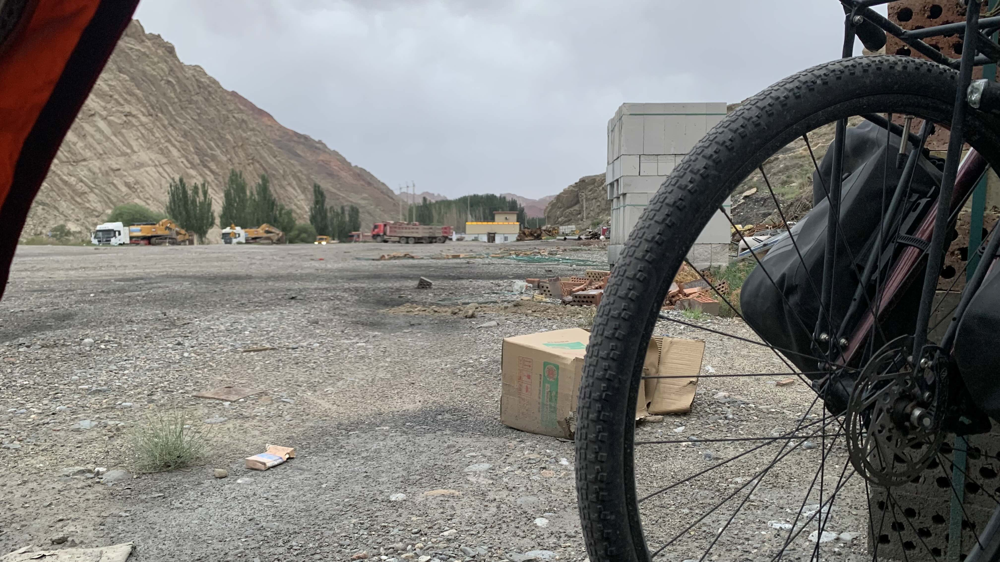
把二十三號停在超市門口，到附近晃晃。看到阿格鄉的牌子，這裡就是按照路書昨天應該抵達的地方。旁邊有個空地，堆放著磚頭木材。選了一堆磚頭圍起來的角落搭上帳篷，應該還算隱蔽吧。
今日花費： 飲料 10元